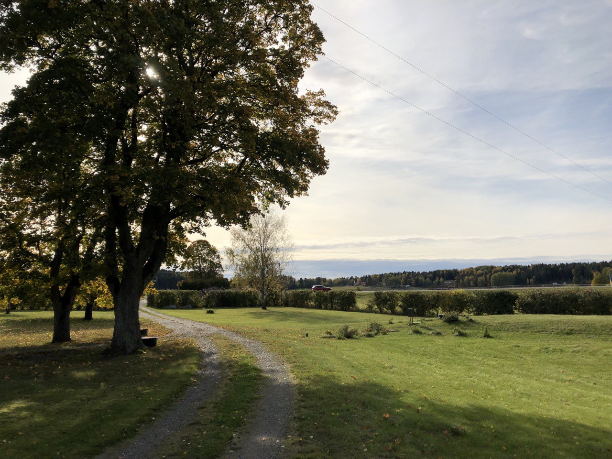

Kära vänner och familj
Vad kul att ni fått vår inbjudan, och att ni hittat hit till denna sida!
Vi ser så mycket fram emot att få fira vårt bröllop med er.
Plats
SÄTTRA GÅRD, MUNSÖ

Vi vill bara börja med att adressera ändringen av plats. Som ni märkt har vi på grund av rådande omständigheter behövt tänka om när det gäller plats för vår bröllopsfest. Eftersom vi hoppas att restriktionerna är mindre snäva för privata tillställningar än för verksamheter har vi valt att byta plats till Carolines föräldrars gård på Ekerö i Stockholm. Vi ber om ursäkt ifall det stökar till sommarplanerna, men hoppas ändå att få se just dig där!
Med andra ord hoppas vi verkligen att denna tillst√§llning blir av! Vi kommer att vara utomhus hela dagen, och brudparet kommer hoppeligen √§ven vara vaccinerade och redo f√∂r pussar och kramar ü§ó
Skulle vi dock av uppenbara skäl vara tvugna att ställa in, kommer vi att höra av oss till alla er som OSAt ja samt uppdatera denna hemsida.
OSA
När det gäller oss-datum har vi valt att förlänga det till 20e juni. Osa kan du göra genom att fylla i detta formulär eller genomt att maila till oss på felix.mulder@gmail.com.
Boende och transport
Tyvärr finns det inte mycket att erbjuda på landet kring hotell, så vad det gäller boende/transport kommer vi att rekommendera två olika alternativ:
-
Bo i stan
Vi kommer att erbjuda busstransport från Stockholm city samma dag med hemresa tillbaka under festnatten. Buss kommer att avgå runt 12 lördag 7e (adress TBA) och ta er till Munsö Sättra 1, samt tillbaka till Stockholm city runt 01.00.
-
Camping på området
För er som önskar en mer intim upplevelse kommer det att finnas platser i två 20-manna tält på gården. Då är man välkommen att även sova över dagen/kvällen innan om man vill. Toalett och duschmöjligheter finns i husen. Först till kvarn! Skriv i er OSA om ni önskar tältplats!
-
AirBnB
Längre ner på Ekerö finns en del AirBnB, men eftersom det är en bit bort och man kanske inte alltid vill köra själv så rekommenderar vi att förboka taxi de tider/sträckor som ni önskar mellan era boenden och gården.
Toastmasters & tal!
V√•ra toastmasters f√∂r kv√§llen kommer att ansl√•s inom kort, och √§ven info om hur en n√•r dessa! T√§nk g√§rna ut n√•got tillsvidare ü§ó
Presenter
Er n√§rvaro √§r den b√§sta presenten! Vi √§ger redan mer fysiska prylar √§n vad vi borde, s√• fysiska ting undanbedes tacksamt. Vill man bidra till en framtida br√∂llopsresa s√• kan man swisha Jeanette Vitasp p√• 0706184882 üòå
Mer info om dagen
Vi kommer att b√∂rja eftermiddagen med bubbel och mingel, t√§tt f√∂ljt av en lovordsceremoni. D√§refter l√§r vi k√§nna varandra genom lekar och quiz, innan vi s√§tter oss ner i det stora partyt√§ltet p√• √§ngen och √§ter en god middag tillsammans. Sen blir det dans till en rad olika DJs, h√§ng i baren eller deep-talk i n√•got av de olika sittgrupperna ü§ù
Vad är en lovordsceremoni?
F√∂r er som inte vet, s√• kommer vi att viga oss med n√§rmsta familjen tidigare under sommaren. D√§rf√∂r kommer denna ceremoni vara symbolisk och lite kortare - med andra ord kommer dagen ha mer fokus p√• fest ü•≥
Klädkod
Sommarfin! Vi vill dock uppmärksamma er på att vi kommer att vara på en gård! Det kommer att vara gräs och grus, så välj ett par skor ni kan känna er bekväma i. Eftersom vi kommer vara ute hela dagen och natten är det bra med kläder efter väder; t.ex. en varm tröja till kvällen, eller lämpliga kläder ifall det (gud förbjude) skulle regna på dagen.